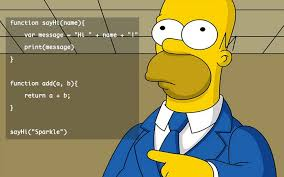

Значения, типы и операторы
Внутри компьютерного мира существуют только данные. Вы можете читать
данные, изменять данные, создавать новые данные, но с тем, что не является
данными, вы ничего не можете сделать. Все эти данные хранятся в виде
длинных последовательностей битов, и, таким образом, принципиально все
данные представляют собой одно и то же.
Биты - это что угодно, что может принимать два значения, обычно описываемые
как ноль и единица .
Внутри компьютера биты представлены как
высокий или низкий электрический заряд, сильный или слабый сигнал,
блестящая или тусклая точка на поверхности компакт-диска. Любая дискретная
информация может быть представлена в виде последовательности
нулей и единиц - следовательно, в битах .
Значения
Представьте себе море битов, океан битов. В энергозависимом хранилище данных (рабочей памяти) обычного современного компьютера более 30 миллиардов бит. В энергонезависимом хранилище (на жестком диске или его эквиваленте), как правило, их на несколько порядков больше.
Числа
Для хранения одиночного числового значения в javaScript применяется фиксированное количество битов - 64. Существует много вариантов того, что можно сделать с 64 битами, и это означает, что количество чисел, которые могут быть представлены таким образом, ограничено. Имея N десятичных цифр, можно представить 1 ()N чисел. Аналогично, имея 64 двоичных числа, можно представить 264 различных чисел, что составляет около 18 квинтиллионов (18 с 18 нулями). Это много.
Арифметика
Символы+ и * называются операторами. Первый из них обозначает сложение, второй - умножение. Если поместить оператор между двумя значениями, то он будет применен к ним и будет создано новое значение. Но значит ли этот пример ~прибавить 4к100 и умножи1ь результат на 11~. или же умножение выполняется до сложения? Как вы уже, возможно, догадались, сначала выполняется умножение. Но, как и в математике, эту последовательность можно изменить, заключив операцию сложения в скобки.
Специальные числа
В JavaScript есть три специальных значения, которые считаются числами, но ведут себя не как обычные числа. Первые два - это Infinity и -Infinity,
Cтруктура программы
В этой главе мы приступим к тому, что действительно можно назвать программированием .
Мы расширим наше владение языкoмjavaScript за пределы
уже знакомых нам существительных и отрывков предложений до такой
степени, что сможем выразить осмысленную прозу.

Выражения и инструкции
Фрагмент кода, в котором создается значение, называется выражением. Каждое значение, написанное буквально (например, 22 или "psychoanalysis"), является выражением. Выражение, заключенное в скобки, также является выражением, как и бинарный оператор, применяемый к двум выражениям, или унарный оператор, применяемый к одному.
Привязки
Это второй вид инструкции. Специальное (ключевое) слово let указывает на то, что в данном предложении будет определена привязка.
Имена привязок
Функции
Многие значения, представляемые в окружении по умолчанию, имеют
fиnction. Функция - это часть программы, обернутая в значение.
Такие
значения могут применяться для выполнения обернутой программы.
Например, в окружении браузера привязка prompt содержит функцию,
которая выводит небольшое диалоговое окно с запросом на ввод данных
пользователем. Эта функция используется так:
Структуры данных: объекты и массивы
Числа, логические значения и строки - это атомы, из которых строятся структуры данных. Однако для многих типов информации требуется более одного атома. Обьекты позволяют нам группировать значения - включая другие объекты, - чтобы строить более сложные структуры.